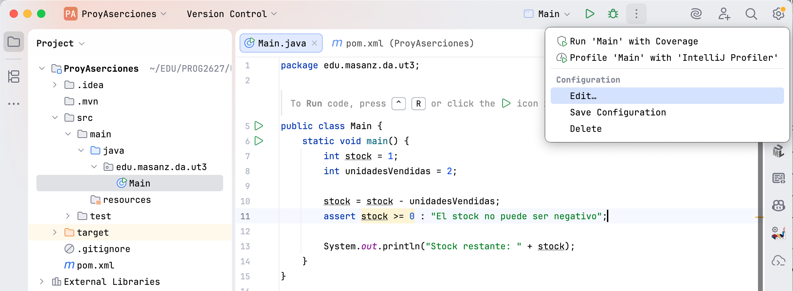
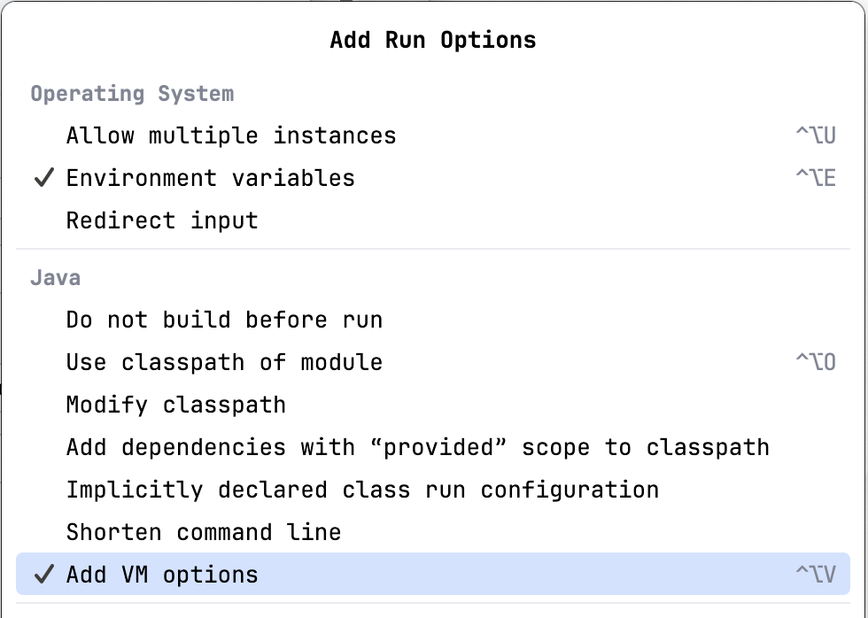
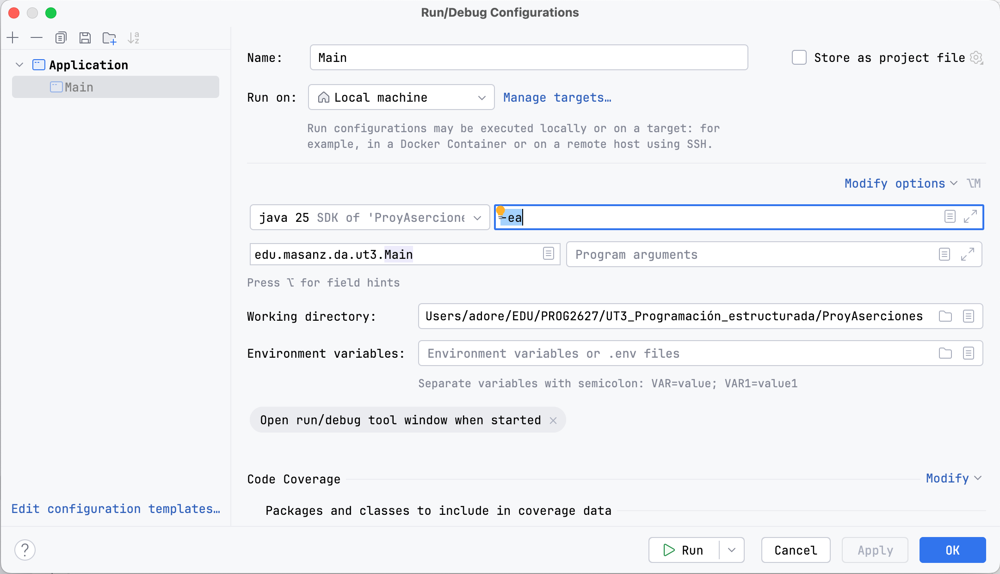
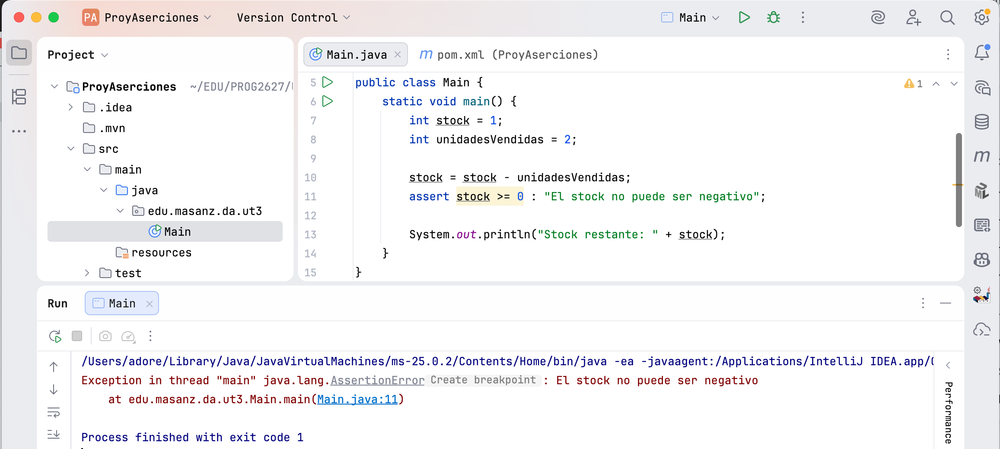

UT 03. Teoría
Programación estructurada
3.1. Decisiones y estructuras de selección
Un programa no siempre ejecuta todas sus instrucciones. En este bloque aprenderás a seguir su flujo y a decidir qué instrucciones deben ejecutarse en cada situación.
3.1. Decisiones y estructuras de selección
Un programa no siempre ejecuta todas sus instrucciones. En este bloque aprenderás a seguir su flujo y a decidir qué instrucciones deben ejecutarse en cada situación.
3.1.1. Flujo de ejecución
Para comprender un programa hay que saber qué instrucción se ejecuta en cada momento y cómo se elige la siguiente.
Qué vas a aprender
- Distinguir entre ejecución secuencial y ejecución controlada por una condición.
- Reconocer sentencias, bloques y estructuras de control.
- Seguir manualmente el valor de las variables mediante una traza.
- Detectar código que nunca llega a ejecutarse o que se ejecuta en un orden inesperado.
Situación inicial
Observa este fragmento:
int saldo = 40;
int precio = 25;
saldo = saldo - precio;
System.out.println("Saldo restante: " + saldo);Java ejecuta las instrucciones en el orden en el que aparecen. Primero crea las variables, después calcula el nuevo saldo y finalmente muestra el resultado. Este comportamiento recibe el nombre de ejecución secuencial.
Sin embargo, el código descuenta el precio incluso cuando no hay saldo suficiente. Para evitarlo necesitamos que el programa tome una decisión:
if (saldo >= precio) {
saldo = saldo - precio;
System.out.println("Saldo restante: " + saldo);
}La condición cambia el flujo: las instrucciones del bloque solo se ejecutan cuando su resultado es true.
Cómo funciona el flujo
Durante la ejecución, Java mantiene un punto que podemos imaginar como una flecha situada sobre la próxima sentencia. Normalmente la flecha avanza hacia abajo, pero una estructura de control puede desviarla, repetir un bloque o finalizar una parte del programa.
| Tipo de flujo | Qué ocurre | Estructuras habituales |
|---|---|---|
| Secuencial | Las sentencias se ejecutan una después de otra. | Asignaciones, cálculos y llamadas a métodos |
| Selección | Se elige qué bloque debe ejecutarse. | if, if-else, switch |
| Repetición | Un bloque se ejecuta varias veces. | while, do-while, for |
| Salto | Se abandona o se interrumpe una parte del flujo. | return, break, continue |
Sentencias y bloques
Una sentencia representa una acción. Las sentencias terminan con punto y coma:
saldo = saldo - precio;
System.out.println(saldo);Un bloque agrupa cero o más sentencias entre llaves. Las estructuras de control utilizan bloques para indicar qué instrucciones dependen de ellas:
{
saldo = saldo - precio;
System.out.println(saldo);
}Una primera traza
Una traza registra el valor de las variables después de cada sentencia relevante. Permite razonar sin ejecutar el programa.
int puntos = 10;
puntos = puntos + 5;
int bonus = puntos / 3;
puntos = puntos + bonus;| Paso | Sentencia ejecutada | puntos |
bonus |
|---|---|---|---|
| 1 | int puntos = 10; |
10 | No existe todavía |
| 2 | puntos = puntos + 5; |
15 | No existe todavía |
| 3 | int bonus = puntos / 3; |
15 | 5 |
| 4 | puntos = puntos + bonus; |
20 | 5 |
La división es entera porque los dos operandos son de tipo int. La traza debe aplicar las reglas reales de Java, no el resultado que esperamos intuitivamente.
Errores frecuentes
- Leer el código como un texto completo. El programa solo conoce los valores alcanzados en el punto actual de la ejecución.
- Confundir una asignación con una igualdad. En
puntos = puntos + 5, Java calcula primero la derecha y guarda después el resultado. - Ignorar las llaves. La indentación ayuda a leer, pero son las llaves las que delimitan realmente un bloque.
- Suponer valores no inicializados. Una variable local debe recibir un valor antes de poder leerse.
Cómo probarlo y depurarlo
- Predice el resultado antes de ejecutar.
- Coloca un punto de ruptura en la primera sentencia.
- Avanza sentencia a sentencia con la ejecución paso a paso del IDE.
- Observa cuándo cambia cada variable.
- Compara esos valores con tu traza manual.
Cuando la predicción y la ejecución no coinciden, no cambies el código de inmediato. Localiza primero el paso exacto en el que aparece la diferencia.
Comprueba tu comprensión
Sin ejecutar el código, determina qué se muestra:
int unidades = 3;
int precio = 4;
int total = unidades * precio;
unidades++;
System.out.println(total + " - " + unidades);Ver la solución razonada
Se muestra 12 - 4. La modificación de unidades ocurre después de calcular total, por lo que no modifica retroactivamente el valor ya guardado.
Resumen del capítulo
- El flujo secuencial ejecuta las sentencias en orden.
- Las estructuras de control pueden seleccionar, repetir o interrumpir partes del programa.
- Las llaves delimitan bloques de sentencias.
- Una traza registra los cambios de las variables y ayuda a detectar el primer punto en el que el comportamiento se desvía de lo esperado.
3.1.2. Condiciones e if
Una condición permite que el programa elija entre distintos caminos a partir de datos concretos.
Qué vas a aprender
- Construir y evaluar expresiones booleanas.
- Utilizar
if,if-elsey cadenaselse if. - Combinar condiciones con
&&,||y!. - Ordenar correctamente condiciones que se solapan.
- Simplificar decisiones innecesariamente complejas.
- Probar cada camino posible y sus valores límite.
Situación inicial
Un programa calcula el precio de una entrada. Las personas menores de 12 años tienen tarifa reducida. El programa necesita seleccionar uno de dos precios:
int edad = 10;
double precio;
if (edad < 12) {
precio = 4.50;
} else {
precio = 7.00;
}
System.out.println("Precio: " + precio);La expresión edad < 12 solo puede producir dos resultados: true o false. Java ejecuta exactamente uno de los dos bloques.
Expresiones booleanas
Una expresión booleana tiene como resultado un valor de tipo boolean. Puede proceder de una variable, una comparación, una llamada a un método o una combinación de varias condiciones.
| Operador | Significado | Ejemplo |
|---|---|---|
== |
Igual a | intentos == 3 |
!= |
Distinto de | estado != 0 |
<, <= |
Menor que, menor o igual que | edad < 18 |
>, >= |
Mayor que, mayor o igual que | saldo >= precio |
&& |
Se cumplen las dos condiciones | edad >= 12 && edad < 18 |
|| |
Se cumple al menos una condición | dia == 6 || dia == 7 |
! |
Niega una condición | !bloqueado |
= y ==. Un solo signo = asigna un valor. Dos signos == comparan valores primitivos. Para comparar el contenido de objetos como String se utiliza normalmente el método equals.String opcion = "guardar";
if (opcion.equals("guardar")) {
System.out.println("Datos guardados");
}Evaluación de cortocircuito
Los operadores && y || evalúan de izquierda a derecha y se detienen cuando ya conocen el resultado:
if (divisor != 0 && numero / divisor > 2) {
System.out.println("Cociente mayor que 2");
}Si divisor != 0 es falso, Java no evalúa la división. La segunda condición no puede convertir una condición falsa en verdadera y así se evita dividir entre cero.
Alternativa simple con if
La alternativa simple ejecuta un bloque únicamente cuando se cumple la condición:
if (temperatura < 0) {
System.out.println("Riesgo de hielo");
}Cuando la condición es falsa, el programa continúa en la primera sentencia situada después del bloque.
Alternativa doble con if-else
La alternativa doble garantiza que se ejecutará uno de los dos bloques, pero nunca ambos:
if (nota >= 5) {
System.out.println("Superado");
} else {
System.out.println("No superado");
}Conviene leerlo como una única estructura: «si se cumple la condición, ejecuta el primer bloque; en caso contrario, ejecuta el segundo».
Varias alternativas con else if
Cuando las alternativas son excluyentes se puede construir una cadena. Java comprueba las condiciones en orden y se detiene en la primera verdadera:
if (nota >= 9) {
calificacion = "Sobresaliente";
} else if (nota >= 7) {
calificacion = "Notable";
} else if (nota >= 5) {
calificacion = "Aprobado";
} else {
calificacion = "Suspenso";
}El orden es decisivo. Si se comprobara primero nota >= 5, una nota de 9 cumpliría esa condición y nunca alcanzaría la condición de sobresaliente.
Traza de una cadena de condiciones
Para nota = 8:
| Paso | Condición | Resultado | Consecuencia |
|---|---|---|---|
| 1 | nota >= 9 |
false |
Continúa con el siguiente else if |
| 2 | nota >= 7 |
true |
Asigna "Notable" |
| 3 | nota >= 5 |
No se evalúa | La cadena ya ha elegido una rama |
Condiciones anidadas e independientes
Un if puede contener otro. El anidamiento resulta útil cuando la segunda decisión solo tiene sentido después de la primera:
if (usuarioValido) {
if (claveCorrecta) {
System.out.println("Acceso permitido");
} else {
System.out.println("Clave incorrecta");
}
} else {
System.out.println("Usuario inexistente");
}En cambio, se utilizan varios if independientes cuando pueden ejecutarse varias acciones:
if (temperatura < 5) {
System.out.println("Hace frío");
}
if (llueve) {
System.out.println("Lleva paraguas");
}Si hace frío y llueve, se muestran los dos mensajes. Una cadena if-else if solo habría elegido uno.
Simplificación de condiciones
Cuando una expresión ya produce un booleano, no hace falta convertirla de nuevo en true o false.
Código innecesariamente largo
public boolean esMayorDeEdad(int edad) {
if (edad >= 18) {
return true;
} else {
return false;
}
}Código simplificado
public boolean esMayorDeEdad(int edad) {
return edad >= 18;
}La versión breve expresa directamente la regla y reduce los caminos que hay que leer y comprobar.
Prueba de valores límite
Una condición suele fallar en los límites. Para edad < 12 no basta con probar una edad claramente menor y otra claramente mayor:
| Caso | Edad | Resultado esperado | Qué comprueba |
|---|---|---|---|
| Por debajo del límite | 11 | Tarifa reducida | La rama verdadera |
| En el límite | 12 | Tarifa general | La diferencia entre < y <= |
| Por encima del límite | 13 | Tarifa general | La rama falsa |
| Dato no válido | -1 | Debe rechazarse | La validación del dominio |
Errores frecuentes
- Escribir un punto y coma después del
if.if (saldo >= precio); { // El punto y coma termina el if saldo = saldo - precio; } - Comparar textos con
==. Para comparar su contenido se utiliza normalmenteequals. - Confundir
&&con||. «Debe cumplir ambas» y «basta con una» son reglas diferentes. - Dejar huecos entre intervalos. Por ejemplo, comprobar
edad < 12y despuésedad > 12deja sin clasificar la edad 12. - Solapar condiciones en un orden incorrecto. La primera condición verdadera impide comprobar las siguientes ramas de una cadena.
- Anidar sin necesidad. Un anidamiento profundo dificulta seguir el flujo y detectar qué
elsecorresponde a cadaif.
Cómo probarlo y depurarlo
Para depurar una selección, no basta con detenerse dentro del bloque. Coloca el punto de ruptura antes de la condición y sigue este proceso:
- Anota los valores de las variables utilizadas por la condición.
- Calcula manualmente el resultado de cada comparación.
- Comprueba qué operadores lógicos llegan a evaluarse.
- Avanza una sentencia y observa qué rama elige Java.
- Repite la prueba con datos que obliguen a recorrer cada rama.
Comprueba tu comprensión
1. ¿Qué mensaje se muestra cuando edad vale 17?
if (edad < 12) {
System.out.println("Infancia");
} else if (edad < 18) {
System.out.println("Adolescencia");
} else {
System.out.println("Edad adulta");
}Ver la solución
Se muestra Adolescencia. La primera condición es falsa y la segunda es verdadera.
2. ¿Qué cambio necesita la condición para aceptar únicamente valores entre 1 y 10, ambos incluidos?
if (valor >= 1 || valor <= 10) {
System.out.println("Valor válido");
}Ver la solución
Debe utilizarse &&:
if (valor >= 1 && valor <= 10) {
System.out.println("Valor válido");
}El valor debe cumplir simultáneamente los dos límites.
3. ¿Por qué pueden mostrarse dos mensajes?
int temperatura = 2;
if (temperatura < 10) {
System.out.println("Temperatura baja");
}
if (temperatura < 5) {
System.out.println("Riesgo de hielo");
}Ver la solución
Son dos estructuras independientes y las dos condiciones son verdaderas. Si solo debiera aparecer el aviso más específico, habría que reorganizar la selección.
Resumen del capítulo
- La condición de un
ifdebe producir un valor booleano. ifrepresenta una alternativa simple yif-elseuna alternativa doble.- Una cadena
else ifcomprueba condiciones en orden y ejecuta la primera rama válida. - Los
ifindependientes pueden ejecutar varias ramas. - Las pruebas deben cubrir cada camino, los valores límite y los datos no válidos.
3.1.3. Selección con switch
Cuando una decisión compara el mismo valor con varias opciones concretas, switch puede expresar la selección con mayor claridad.
Qué vas a aprender
- Reconocer cuándo una selección se adapta a un
switch. - Utilizar el
switchclásico concase,breakydefault. - Comprender la caída entre casos y evitarla cuando no es intencionada.
- Agrupar varios casos que comparten una acción.
- Utilizar etiquetas con flecha y expresiones
switch. - Elegir entre
ifyswitchsegún la forma del problema.
Situación inicial
Una aplicación recibe un número del 1 al 3 y debe mostrar el nivel seleccionado. Una cadena de condiciones puede resolverlo:
if (nivel == 1) {
descripcion = "Inicial";
} else if (nivel == 2) {
descripcion = "Intermedio";
} else if (nivel == 3) {
descripcion = "Avanzado";
} else {
descripcion = "Nivel desconocido";
}Todas las condiciones comparan la misma variable con valores concretos. Esa forma encaja con un switch.
El switch clásico
switch (nivel) {
case 1:
descripcion = "Inicial";
break;
case 2:
descripcion = "Intermedio";
break;
case 3:
descripcion = "Avanzado";
break;
default:
descripcion = "Nivel desconocido";
break;
}Java evalúa una vez la expresión situada entre paréntesis. Después busca una etiqueta case coincidente. Si no existe, entra en default, cuando está presente.
| Elemento | Función |
|---|---|
switch (nivel) |
Evalúa el selector de la decisión. |
case 1: |
Marca el punto de entrada para ese valor. |
break; |
Finaliza el switch clásico y continúa después de él. |
default: |
Recoge los valores no tratados por ningún case. |
Tipos habituales del selector
En el uso no experimental el selector puede trabajar con tipos enteros compatibles, char, String y tipos enumerados. En este bloque utilizaremos principalmente números, caracteres y textos.
La caída entre casos
En el switch clásico, encontrar una etiqueta indica dónde comienza la ejecución, pero no dónde termina. Sin un break, la ejecución continúa por los casos siguientes:
int opcion = 2;
switch (opcion) {
case 1:
System.out.println("Uno");
case 2:
System.out.println("Dos");
case 3:
System.out.println("Tres");
default:
System.out.println("Fin");
}La ejecución comienza en case 2 y, como no hay ningún break, muestra:
Dos
Tres
Finbreak.Agrupación de casos
La caída puede utilizarse deliberadamente para agrupar valores que comparten una acción:
switch (diaSemana) {
case 1:
case 2:
case 3:
case 4:
case 5:
tipoDia = "Laborable";
break;
case 6:
case 7:
tipoDia = "Fin de semana";
break;
default:
tipoDia = "Día no válido";
break;
}Los primeros casos no tienen instrucciones. Todos conducen al mismo bloque y comparten el mismo break.
Etiquetas con flecha
Las versiones nuevas de Java permiten una sintaxis que evita la caída entre casos. Cada flecha define las instrucciones de una alternativa:
switch (diaSemana) {
case 1, 2, 3, 4, 5 -> tipoDia = "Laborable";
case 6, 7 -> tipoDia = "Fin de semana";
default -> tipoDia = "Día no válido";
}No se añade break. Una vez ejecutada la alternativa seleccionada, el switch termina.
Cuando una alternativa necesita varias sentencias, se utiliza un bloque:
switch (opcion) {
case 1 -> {
System.out.println("Guardando...");
guardado = true;
}
case 2 -> {
System.out.println("Cancelando...");
guardado = false;
}
default -> System.out.println("Opción desconocida");
}El switch como expresión
Un switch moderno puede producir directamente un valor. Así se evita declarar una variable y asignarla por separado en cada rama:
String tipoDia = switch (diaSemana) {
case 1, 2, 3, 4, 5 -> "Laborable";
case 6, 7 -> "Fin de semana";
default -> "Día no válido";
};El punto y coma final pertenece a la asignación completa. Como el switch produce un valor, todas las posibilidades deben quedar cubiertas.
Bloques y yield
Si una alternativa necesita varias sentencias antes de producir el resultado, utiliza yield:
double precioFinal = switch (tipoCliente) {
case "NORMAL" -> precioBase;
case "SOCIO" -> precioBase * 0.90;
case "PROMOCION" -> {
double descuento = precioBase * 0.20;
System.out.println("Descuento: " + descuento);
yield precioBase - descuento;
}
default -> precioBase;
};yield entrega el valor de esa alternativa a la expresión switch. No equivale a devolver un valor desde el método.
Elegir entre if y switch
| Situación | Estructura más natural | Motivo |
|---|---|---|
| Comparar una variable con varios valores concretos | switch |
Hace visibles las opciones disponibles. |
| Comprobar intervalos | if-else if |
Los casos de un switch no representan directamente rangos. |
| Combinar varias variables | if |
Permite escribir cualquier expresión booleana. |
| Asignar un valor según una opción | Expresión switch |
Evita repetir asignaciones. |
| Ejecutar varias condiciones independientes | Varios if |
Pueden cumplirse varias condiciones a la vez. |
La elección no depende de cuál estructura tenga menos líneas, sino de cuál representa la regla de forma más clara y permite probarla con facilidad.
Traza de un switch
Para codigo = 'B':
int puntos = switch (codigo) {
case 'A' -> 100;
case 'B' -> 75;
case 'C' -> 50;
default -> 0;
};| Paso | Acción | Resultado |
|---|---|---|
| 1 | Evalúa codigo |
'B' |
| 2 | Busca una etiqueta coincidente | case 'B' |
| 3 | Evalúa la expresión situada tras la flecha | 75 |
| 4 | Asigna el resultado | puntos = 75 |
Errores frecuentes
- Olvidar un
breaken la sintaxis clásica. La ejecución continúa en los casos siguientes. - Escribir casos duplicados. Dos etiquetas no pueden representar el mismo valor.
- Utilizar variables como etiquetas. Los casos tradicionales deben ser valores constantes compatibles.
- Olvidar valores inesperados.
defaultpermite definir qué ocurre fuera de las opciones previstas. - Mezclar estilos sin una razón clara. En código inicial conviene elegir sintaxis clásica o sintaxis con flechas y mantenerla de forma coherente.
- Usar
switchpara intervalos. Una cadena de condiciones suele expresar mejor rangos como «menor de 18» o «entre 1 y 10».
Cómo probarlo y depurarlo
- Prepara al menos un dato para cada caso.
- Añade un dato que obligue a ejecutar
default. - En la sintaxis clásica, comprueba el punto exacto en el que termina cada camino.
- Si aparece la salida de varios casos, busca un
breakausente. - En una expresión
switch, verifica que cada alternativa produce un valor del tipo esperado.
Comprueba tu comprensión
1. ¿Qué muestra el código cuando opcion vale 1?
switch (opcion) {
case 1:
System.out.println("Consultar");
case 2:
System.out.println("Modificar");
break;
default:
System.out.println("Salir");
}Ver la solución
Muestra Consultar y Modificar. Falta un break después del primer mensaje, por lo que la ejecución cae al caso siguiente.
2. Convierte mentalmente esta cadena en una expresión switch:
String nombre;
if (mes == 1) {
nombre = "Enero";
} else if (mes == 2) {
nombre = "Febrero";
} else {
nombre = "Otro mes";
}Ver una posible solución
String nombre = switch (mes) {
case 1 -> "Enero";
case 2 -> "Febrero";
default -> "Otro mes";
};3. ¿Elegirías if o switch para comprobar si una temperatura está por debajo de 0, entre 0 y 25 o por encima de 25?
Ver la solución razonada
Una cadena if-else if, porque la decisión utiliza intervalos y no valores concretos aislados.
Resumen del capítulo
switchresulta adecuado cuando se compara un selector con varias opciones concretas.- El
switchclásico utiliza normalmentebreakpara evitar la caída entre casos. - Las etiquetas con flecha no producen caída y permiten agrupar casos con comas.
- Una expresión
switchproduce un valor y puede utilizaryielden alternativas con bloque. ifsigue siendo la opción natural para intervalos, condiciones compuestas y decisiones basadas en varias variables.
3.2. Estructuras de repetición
Los bucles permiten ejecutar un bloque varias veces sin duplicar código. Para utilizarlos correctamente hay que controlar condiciones, contadores y acumuladores.
3.2. Estructuras de repetición
Los bucles permiten ejecutar un bloque varias veces sin duplicar código. Para utilizarlos correctamente hay que controlar su inicio, su continuación y su finalización.
3.2.1. while y do-while
Un bucle repite un bloque mientras se cumpla una condición. La posición de esa condición determina si el bloque puede ejecutarse cero veces o debe ejecutarse al menos una.
Qué vas a aprender
- Identificar las partes que controlan una repetición.
- Utilizar
whilecuando la repetición depende de una condición. - Utilizar
do-whilecuando el bloque debe ejecutarse antes de comprobar la condición. - Realizar la traza de un bucle.
- Prevenir bucles infinitos y errores en los límites.
Situación inicial
El siguiente código muestra una cuenta atrás, pero repite manualmente la misma operación:
int numero = 3;
System.out.println(numero);
numero--;
System.out.println(numero);
numero--;
System.out.println(numero);La misma regla puede expresarse mediante un bucle. Así, cambiar el valor inicial no obliga a copiar más instrucciones:
int numero = 3;
while (numero >= 1) {
System.out.println(numero);
numero--;
}Las partes de una repetición
Para razonar sobre un bucle conviene localizar cuatro elementos:
| Elemento | Pregunta que responde | En el ejemplo |
|---|---|---|
| Inicialización | ¿Con qué valores comienza? | int numero = 3; |
| Condición de continuación | ¿Cuándo se ejecuta otra vuelta? | numero >= 1 |
| Cuerpo | ¿Qué se repite? | Mostrar el número |
| Actualización | ¿Qué acerca el bucle a su final? | numero--; |
La sentencia while
while comprueba la condición antes de cada vuelta:
while (condicion) {
// Instrucciones que se repiten
}La condición debe producir un valor booleano. Si es falsa desde el principio, el cuerpo no se ejecuta ninguna vez.
Traza de un while
int numero = 1;
int suma = 0;
while (numero <= 4) {
suma = suma + numero;
numero++;
}| Comprobación | numero al entrar |
suma tras el cuerpo |
¿Continúa? |
|---|---|---|---|
| 1 | 1 | 1 | Sí |
| 2 | 2 | 3 | Sí |
| 3 | 3 | 6 | Sí |
| 4 | 4 | 10 | Sí |
| 5 | 5 | No cambia | No |
La condición se comprueba cinco veces, aunque el cuerpo solo se ejecuta cuatro. La última comprobación es la que permite salir.
La sentencia do-while
do-while ejecuta primero el cuerpo y comprueba después si debe repetirlo:
do {
// Instrucciones que se repiten
} while (condicion);while.Este comportamiento resulta natural cuando hay que realizar una primera acción antes de decidir si se repite, por ejemplo al solicitar un dato:
int valor;
do {
System.out.print("Introduce un valor entre 1 y 10: ");
valor = teclado.nextInt();
} while (valor < 1 || valor > 10);
System.out.println("Valor aceptado: " + valor);La petición debe ejecutarse al menos una vez. El bucle continúa mientras el dato sea incorrecto y termina cuando el valor pertenece al intervalo permitido.
Elegir entre while y do-while
| Pregunta | while |
do-while |
|---|---|---|
| ¿Cuándo se comprueba la condición? | Antes del cuerpo | Después del cuerpo |
| Mínimo de ejecuciones | Cero | Una |
| Uso habitual | Repetir mientras se mantenga un estado | Lecturas, menús y validaciones con una primera ejecución obligatoria |
Errores frecuentes
- No modificar el estado de la condición. Si nada puede volverla falsa, el bucle no termina.
- Actualizar en la dirección equivocada. Si la condición es
numero <= 10y el número disminuye, se aleja del final. - Equivocarse en el límite.
<y<=producen una cantidad diferente de vueltas. - Colocar un punto y coma tras
while. En unwhilenormal crea un cuerpo vacío. - Invertir la validación. Para repetir hasta obtener un dato válido, la condición suele expresar cuándo el dato todavía es incorrecto.
Cómo probarlo y depurarlo
- Prueba un valor que no permita entrar en el bucle.
- Prueba un valor que produzca exactamente una vuelta.
- Prueba un valor que produzca varias vueltas.
- Coloca un punto de ruptura en la condición y observa el estado antes de cada iteración.
- Comprueba que cada vuelta acerca el programa a la finalización.
Comprueba tu comprensión
1. ¿Cuántas veces se muestra el mensaje?
int numero = 5;
while (numero < 5) {
System.out.println("Mensaje");
numero++;
}Ver la solución
Ninguna. La condición es falsa en la primera comprobación.
2. Localiza el motivo por el que este bucle no termina:
int numero = 1;
while (numero <= 5) {
System.out.println(numero);
}Ver la solución
numero nunca cambia. Falta una actualización, como numero++;, dentro del cuerpo.
Resumen del capítulo
whilecomprueba la condición antes y puede no ejecutar el cuerpo.do-whilecomprueba la condición después y ejecuta el cuerpo al menos una vez.- Todo bucle necesita una inicialización, una condición, un cuerpo y algún cambio que permita finalizar.
- Las pruebas deben incluir cero, una y varias iteraciones, además de los límites.
3.2.2. for y bucles anidados
La sentencia for reúne en una misma línea la inicialización, la condición y la actualización de una repetición controlada.
Qué vas a aprender
- Reconocer las tres partes de la cabecera de un
for. - Crear recorridos ascendentes, descendentes y con distintos pasos.
- Comprender el ámbito de la variable de control.
- Realizar la traza completa de un
for. - Construir y analizar bucles anidados.
Situación inicial
Cuando conocemos de antemano el intervalo que debe recorrer una variable, las cuatro partes de un while quedan separadas:
int numero = 1;
while (numero <= 5) {
System.out.println(numero);
numero++;
}La misma repetición puede expresarse de forma compacta con for:
for (int numero = 1; numero <= 5; numero++) {
System.out.println(numero);
}Anatomía de un for
for (inicializacion; condicion; actualizacion) {
// Cuerpo del bucle
}| Parte | Cuándo se ejecuta | Ejemplo |
|---|---|---|
| Inicialización | Una sola vez, al comenzar | int numero = 1 |
| Condición | Antes de cada posible vuelta | numero <= 5 |
| Cuerpo | Cuando la condición es verdadera | Mostrar el número |
| Actualización | Después de cada ejecución del cuerpo | numero++ |
Traza de un for
int suma = 0;
for (int numero = 1; numero <= 4; numero++) {
suma += numero;
}| Momento | numero |
Condición | suma |
|---|---|---|---|
| Primera entrada | 1 | true |
1 |
| Segunda entrada | 2 | true |
3 |
| Tercera entrada | 3 | true |
6 |
| Cuarta entrada | 4 | true |
10 |
| Comprobación final | 5 | false |
10 |
Recorridos habituales
Recorrido ascendente
for (int numero = 1; numero <= 10; numero++) {
System.out.println(numero);
}Recorrido descendente
for (int numero = 10; numero >= 1; numero--) {
System.out.println(numero);
}Recorrido con un paso distinto de uno
for (int numero = 0; numero <= 20; numero += 2) {
System.out.println(numero);
}La inicialización, la condición y la actualización deben describir juntas el recorrido. En un recorrido descendente, por ejemplo, una condición creciente como numero <= 10 no representa el final esperado.
Bucles anidados
Un bucle puede contener otro. Por cada vuelta del bucle exterior, el interior realiza todas sus vueltas:
for (int fila = 1; fila <= 3; fila++) {
for (int columna = 1; columna <= 4; columna++) {
System.out.print("(" + fila + "," + columna + ") ");
}
System.out.println();
}El cuerpo interior se ejecuta 4 veces por cada una de las 3 filas: en total, 12 veces.
| Vuelta exterior | Valores de columna |
|---|---|
fila = 1 |
1, 2, 3, 4 |
fila = 2 |
1, 2, 3, 4 |
fila = 3 |
1, 2, 3, 4 |
Ámbito de la variable de control
Cuando la variable se declara en la cabecera, solo existe dentro del for:
for (int numero = 1; numero <= 3; numero++) {
System.out.println(numero);
}
// System.out.println(numero); // Error: numero ya no existe aquíLimitar su ámbito evita que otras partes del método modifiquen por accidente una variable utilizada únicamente para controlar el bucle.
Errores frecuentes
- Error de una posición. Confundir
<con<=añade o elimina una vuelta. - Incrementar en un recorrido descendente. La variable se aleja del límite y el bucle puede no terminar.
- Modificar la variable de control dentro del cuerpo. El recorrido deja de ser predecible.
- Usar la misma variable en dos bucles anidados. Cada nivel debe tener su propio control.
- Olvidar que el bucle interior comienza de nuevo. Su inicialización se ejecuta en cada vuelta exterior.
Cómo probarlo y depurarlo
- Escribe los primeros valores que debería tomar la variable de control.
- Comprueba por separado el primer valor y el último.
- Calcula cuántas veces debe ejecutarse el cuerpo.
- En bucles anidados, observa las dos variables en el depurador.
- Verifica que la variable interior recupera su valor inicial en cada vuelta exterior.
Comprueba tu comprensión
1. ¿Qué valores se muestran?
for (int numero = 8; numero >= 2; numero -= 2) {
System.out.println(numero);
}Ver la solución
Se muestran 8, 6, 4 y 2. Después la variable pasa a 0 y la condición es falsa.
2. ¿Cuántas veces se ejecuta el mensaje?
for (int fila = 1; fila <= 2; fila++) {
for (int columna = 1; columna <= 3; columna++) {
System.out.println("Mensaje");
}
}Ver la solución
Se ejecuta 6 veces: 3 vueltas interiores por cada una de las 2 exteriores.
Resumen del capítulo
forreúne la inicialización, la condición y la actualización.- La condición sigue comprobándose antes de cada vuelta.
- El sentido de la actualización debe ser coherente con el límite.
- En un anidamiento, el bucle interior completa su recorrido por cada vuelta exterior.
3.2.3. Patrones con bucles
Muchos problemas diferentes comparten la misma estructura. Reconocer patrones permite elegir variables, valores iniciales y actualizaciones con mayor seguridad.
Qué vas a aprender
- Diferenciar contadores y acumuladores.
- Calcular totales y medias.
- Mantener máximos y mínimos.
- Controlar búsquedas con indicadores booleanos.
- Procesar datos hasta encontrar un centinela.
- Construir validaciones y menús repetitivos.
Contadores
Un contador registra cuántas veces ocurre algo. Suele comenzar en cero y aumentar en una unidad cuando se cumple la situación que queremos contar:
int cantidadPares = 0;
for (int numero = 1; numero <= 10; numero++) {
if (numero % 2 == 0) {
cantidadPares++;
}
}
System.out.println("Pares: " + cantidadPares);La variable de control numero indica qué valor se está procesando. cantidadPares tiene otra función: cuenta los valores que cumplen la condición.
Acumuladores
Un acumulador combina sucesivamente los valores procesados. Para una suma comienza normalmente en cero:
int suma = 0;
for (int numero = 1; numero <= 5; numero++) {
suma += numero;
}
System.out.println("Suma: " + suma);Para un producto, el valor neutro es uno:
long producto = 1;
for (int numero = 1; numero <= 10; numero++) {
producto *= numero;
}long amplía el intervalo respecto a int, pero también tiene un límite.Cálculo de una media
Una media necesita dos datos: la suma y la cantidad de valores. La división se realiza después del bucle:
double suma = 0;
int cantidad = 0;
int valor = teclado.nextInt();
while (valor != -1) {
suma += valor;
cantidad++;
valor = teclado.nextInt();
}
if (cantidad > 0) {
double media = suma / cantidad;
System.out.println("Media: " + media);
} else {
System.out.println("No se introdujeron valores");
}La comprobación final evita una división entre cero cuando el primer valor introducido es el centinela.
Valores centinela
Un centinela es un valor reservado para indicar que no quedan más datos. No forma parte de los datos que se procesan.
System.out.print("Edad (-1 para terminar): ");
int edad = teclado.nextInt();
while (edad != -1) {
System.out.println("Edad registrada: " + edad);
System.out.print("Edad (-1 para terminar): ");
edad = teclado.nextInt();
}La primera lectura se realiza antes del bucle y las siguientes al final del cuerpo. Si se olvida la segunda lectura, el programa procesa indefinidamente el mismo valor.
Máximos y mínimos
Para calcular un máximo no siempre es correcto comenzar en cero. Si todos los valores son negativos, cero sería un resultado que nunca apareció.
Una solución segura consiste en inicializar el máximo con el primer dato válido y procesar después los restantes:
System.out.print("Primer valor: ");
int maximo = teclado.nextInt();
for (int posicion = 2; posicion <= 5; posicion++) {
System.out.print("Siguiente valor: ");
int valor = teclado.nextInt();
if (valor > maximo) {
maximo = valor;
}
}
System.out.println("Máximo: " + maximo);Para calcular un mínimo se mantiene la misma estructura y se cambia la comparación a valor < minimo.
Búsqueda e indicadores booleanos
Un indicador booleano recuerda si ya ha ocurrido una situación. Este ejemplo determina si un número mayor que 1 tiene algún divisor distinto de 1 y de sí mismo:
boolean encontrado = false;
int divisor = 2;
while (divisor < numero && !encontrado) {
if (numero % divisor == 0) {
encontrado = true;
} else {
divisor++;
}
}
if (encontrado) {
System.out.println("Tiene un divisor: " + divisor);
} else {
System.out.println("No tiene divisores propios");
}La condición combina dos motivos para continuar: quedan candidatos y todavía no se ha encontrado un divisor. Cuando cualquiera deja de cumplirse, la búsqueda termina.
Validación de datos
Validar significa impedir que el programa continúe con un dato que no cumple las reglas. La condición de repetición debe expresar cuándo hay que volver a pedirlo:
double nota;
do {
System.out.print("Introduce una nota entre 0 y 10: ");
nota = teclado.nextDouble();
if (nota < 0 || nota > 10) {
System.out.println("La nota no es válida");
}
} while (nota < 0 || nota > 10);La condición aparece dos veces porque una decide si se muestra el aviso y la otra si se repite la lectura. Ambas deben representar exactamente la misma regla de invalidez.
Menús repetitivos
Un menú suele mostrarse al menos una vez y repetirse hasta seleccionar la opción de salida:
int opcion;
do {
System.out.println("1. Consultar");
System.out.println("2. Modificar");
System.out.println("0. Salir");
System.out.print("Opción: ");
opcion = teclado.nextInt();
switch (opcion) {
case 1 -> System.out.println("Consulta seleccionada");
case 2 -> System.out.println("Modificación seleccionada");
case 0 -> System.out.println("Fin del programa");
default -> System.out.println("Opción no válida");
}
} while (opcion != 0);La selección decide qué operación se realiza en cada vuelta y el bucle decide si el menú vuelve a aparecer.
Errores frecuentes
- Inicializar una suma en uno. El resultado queda desplazado una unidad.
- Inicializar un producto en cero. Cualquier multiplicación posterior seguirá dando cero.
- Contar el centinela. La comprobación debe hacerse antes de procesarlo.
- Calcular la media dentro del bucle. La media definitiva solo se conoce al terminar la entrada.
- Inicializar un máximo o mínimo con un valor arbitrario. Puede producir un resultado que no pertenece a los datos.
- Olvidar actualizar un indicador. La condición de búsqueda nunca detectará que el elemento ya se encontró.
Cómo probarlo y depurarlo
Prepara los datos según el patrón:
- Contador: ningún caso, un caso y varios casos que cumplan la condición.
- Media: entrada vacía, un único dato y varios datos.
- Máximo o mínimo: valores positivos, negativos, repetidos y ordenados de distintas formas.
- Búsqueda: coincidencia al principio, en medio, al final y ausencia de coincidencia.
- Validación: dato válido en el primer intento y varios datos inválidos antes del válido.
Comprueba tu comprensión
1. ¿Qué error tiene este producto?
int producto = 0;
for (int numero = 1; numero <= 5; numero++) {
producto *= numero;
}Ver la solución
Debe comenzar en 1. Cero multiplicado por cualquier número siempre produce cero.
2. ¿Por qué conviene comprobar que cantidad > 0 antes de calcular una media?
Ver la solución
Porque puede no haberse procesado ningún dato. En ese caso la división no representa una media y, con operandos enteros, provocaría además una división entre cero.
Resumen del capítulo
- Un contador registra cuántas veces ocurre algo.
- Un acumulador combina los valores procesados y debe partir del valor neutro adecuado.
- Una media combina suma y cantidad, y exige tratar la ausencia de datos.
- Los máximos y mínimos deben inicializarse a partir de un dato válido.
- Los centinelas, indicadores y validaciones permiten controlar repeticiones cuyo número de vueltas no se conoce de antemano.
3.2.4. Sentencias de salto
Las sentencias break, continue y return transfieren el control a otro punto y pueden terminar anticipadamente una iteración, un bucle o un método.
Qué vas a aprender
- Interrumpir un bucle con
break. - Omitir el resto de una iteración con
continue. - Finalizar un método y, cuando corresponda, devolver un valor con
return. - Reconocer el destino exacto de cada salto.
- Valorar cuándo un salto aclara el código y cuándo dificulta su lectura.
break: terminar el bucle
Un break sin etiqueta finaliza el bucle más cercano que lo contiene. La ejecución continúa en la primera sentencia situada después del bucle.
int divisorEncontrado = 0;
for (int divisor = 2; divisor < numero; divisor++) {
if (numero % divisor == 0) {
divisorEncontrado = divisor;
break;
}
}
if (divisorEncontrado != 0) {
System.out.println("Divisor: " + divisorEncontrado);
}Cuando se encuentra un divisor, seguir comprobando candidatos no aporta información. break termina la búsqueda.
break resulta claro cuando una búsqueda ha cumplido su objetivo o cuando aparece una condición excepcional de finalización.En un switch clásico, break finaliza el switch. No abandona el método ni cualquier bloque de llaves.
continue: pasar a la siguiente iteración
continue omite las instrucciones restantes de la iteración actual, pero no finaliza el bucle:
for (int numero = 1; numero <= 6; numero++) {
if (numero % 2 != 0) {
continue;
}
System.out.println(numero);
}Los valores impares ejecutan continue y no llegan al mensaje. Se muestran 2, 4 y 6.
numero |
¿Es impar? | Acción |
|---|---|---|
| 1 | Sí | Salta el mensaje |
| 2 | No | Muestra 2 |
| 3 | Sí | Salta el mensaje |
| 4 | No | Muestra 4 |
En un for, tras continue se ejecuta la actualización de la cabecera y después vuelve a comprobarse la condición. En un while, el control vuelve directamente a su condición.
continue impide ejecutar la actualización de la variable de control, el bucle puede quedar atrapado en la misma iteración.int numero = 1;
while (numero <= 5) {
if (numero == 3) {
continue; // numero sigue valiendo 3 indefinidamente
}
numero++;
}return: terminar el método
return finaliza el método completo. Si el método declara un tipo de retorno, debe entregar un valor compatible:
public boolean esPar(int numero) {
return numero % 2 == 0;
}También puede utilizarse para terminar anticipadamente cuando ya se conoce la respuesta:
public boolean tieneDivisorPropio(int numero) {
for (int divisor = 2; divisor < numero; divisor++) {
if (numero % divisor == 0) {
return true;
}
}
return false;
}Si el bucle encuentra un divisor, devuelve true inmediatamente. Solo se llega al último return cuando se han probado todos los candidatos sin encontrar ninguno.
Return en métodos void
Un método void no devuelve un valor, pero puede utilizar return; para finalizar:
public void mostrarDivision(int dividendo, int divisor) {
if (divisor == 0) {
System.out.println("No se puede dividir entre cero");
return;
}
System.out.println(dividendo / divisor);
}Esta salida temprana evita introducir todo el comportamiento normal dentro de un else.
Destino de cada salto
| Sentencia | Qué termina | Dónde continúa |
|---|---|---|
break |
El bucle o switch más cercano |
Después de esa estructura |
continue |
La iteración actual | En el punto de continuación del bucle |
return |
El método completo | En el código que llamó al método |
Saltos con etiqueta
Java permite asociar una etiqueta a un bucle y utilizarla con break o continue. Puede resultar útil para salir de varios bucles anidados:
busqueda:
for (int fila = 1; fila <= 3; fila++) {
for (int columna = 1; columna <= 3; columna++) {
if (fila * columna == objetivo) {
System.out.println("Encontrado");
break busqueda;
}
}
}break busqueda; termina el bucle que lleva esa etiqueta, no solo el interior. Las etiquetas deben reservarse para situaciones en las que hagan el flujo más claro; con frecuencia puede extraerse la búsqueda a un método y utilizar return.
Salto o condición de control
Una búsqueda puede terminarse con break o incorporando el estado a la condición del bucle. Las dos soluciones pueden ser correctas:
Salida con break
while (hayCandidatos) {
if (coincide) {
encontrado = true;
break;
}
avanzar();
}Estado en la condición
while (hayCandidatos && !encontrado) {
if (coincide) {
encontrado = true;
} else {
avanzar();
}
}La mejor elección es la que permite comprender con más facilidad por qué termina el bucle. Deben evitarse cadenas de saltos que obliguen a reconstruir mentalmente numerosos destinos.
Errores frecuentes
- Creer que
breaktermina el método. Solo termina su estructura de destino. - Creer que
continuetermina el bucle. Solo termina la iteración actual. - Colocar código necesario después de
continue. Esa parte no se ejecuta en las iteraciones que saltan. - Olvidar devolver un valor en algún camino. Un método no
voiddebe entregar un valor en todos los recorridos que puedan completarse. - Abusar de salidas anticipadas. Demasiados puntos de salida dificultan seguir el flujo.
Cómo probarlo y depurarlo
- Marca cada sentencia de salto y escribe su destino.
- Prueba un caso que no ejecute el salto.
- Prueba un caso que lo ejecute en la primera iteración.
- Prueba otro que lo ejecute después de varias iteraciones.
- En un
continue, comprueba qué actualización ocurre antes de la siguiente condición.
Comprueba tu comprensión
1. ¿Qué valores se muestran?
for (int numero = 1; numero <= 5; numero++) {
if (numero == 3) {
continue;
}
System.out.println(numero);
}Ver la solución
Se muestran 1, 2, 4 y 5. La iteración de 3 omite el mensaje, pero el bucle continúa.
2. ¿Qué diferencia habría si se sustituyera continue por break?
Ver la solución
Se mostrarían únicamente 1 y 2. Al llegar a 3, break terminaría el bucle completo.
Resumen del capítulo
breaktermina el bucle oswitchque actúa como destino.continueomite el resto de la iteración actual y comienza la siguiente.returntermina el método completo y puede devolver un valor.- Las etiquetas permiten dirigir el salto en bucles anidados, pero deben utilizarse con moderación.
- Antes de utilizar un salto hay que identificar con precisión su destino y comprobar todos los caminos.
3.3. Control y creación de excepciones
Las excepciones permiten avisar de que una operación no puede continuar con normalidad. En este bloque aprenderás a tratarlas y a crear tus propias excepciones.
3.3. Control y creación de excepciones
Las excepciones permiten avisar de que una operación no puede continuar con normalidad. En este bloque aprenderás a reconocerlas, tratarlas y crear una excepción propia sencilla.
3.3.1. El modelo de excepciones
Una excepción es un objeto que informa de un problema producido durante la ejecución.
Qué vas a aprender
- Distinguir una excepción de un error de compilación o un resultado incorrecto.
- Reconocer algunas excepciones frecuentes.
- Comprender cómo se propaga una excepción.
- Leer la información principal de una traza.
- Diferenciar de forma básica excepciones comprobadas y no comprobadas.
Una excepción durante la ejecución
Este programa compila, pero no puede completar la división:
int dividendo = 12;
int divisor = 0;
int cociente = dividendo / divisor;
System.out.println(cociente);Al ejecutar la tercera línea, Java crea una ArithmeticException. Las instrucciones posteriores no se ejecutan por el camino normal.
No todos los problemas son excepciones
| Problema | Ejemplo |
|---|---|
| Error de compilación | Falta un punto y coma. El programa no llega a ejecutarse. |
| Error lógico | El programa calcula mal un descuento, pero continúa. |
| Excepción | Se intenta convertir "hola" en un número. |
Excepciones frecuentes
| Excepción | Cuándo puede aparecer |
|---|---|
NumberFormatException |
Un texto no representa el número esperado. |
ArithmeticException |
Se realiza una operación entera no válida, como dividir entre cero. |
NullPointerException |
Se intenta usar una referencia null como si contuviera un objeto. |
IllegalArgumentException |
Un argumento no cumple las reglas de un método. |
Propagación
Si un método no trata una excepción, esta vuelve al método que lo llamó:
public static int convertir(String texto) {
return Integer.parseInt(texto);
}
public static void main(String[] args) {
int numero = convertir("doce");
System.out.println(numero);
}La excepción se produce dentro de parseInt, pasa por convertir y llega a main. Si ningún método la trata, el programa termina y Java muestra una traza.
Cómo leer una traza
java.lang.NumberFormatException: For input string: "doce"
at java.lang.Integer.parseInt(Integer.java:...)
at Conversor.convertir(Conversor.java:4)
at Conversor.main(Conversor.java:8)- Tipo:
NumberFormatException. - Mensaje: el texto problemático es
"doce". - Primera línea de nuestro código:
Conversor.java:4.
Dos grupos que debemos conocer
| Grupo | Qué exige Java | Ejemplo |
|---|---|---|
| Comprobadas | Capturarlas o declararlas con throws. |
IOException |
| No comprobadas | El compilador no obliga a capturarlas o declararlas. | NumberFormatException |
Por ahora basta con recordar esta diferencia. En el último capítulo veremos por qué afecta a las excepciones que creemos.
Cómo probarlo y depurarlo
- Ejecuta primero un caso correcto.
- Provoca después la excepción con un dato sencillo.
- Lee el tipo, el mensaje y la primera línea de tu código.
- Utiliza el depurador para observar en qué sentencia se interrumpe el flujo.
Comprueba tu comprensión
¿Por qué capturar una NullPointerException no suele arreglar una variable que nunca se inicializó?
Ver la solución
Porque ocultaría el defecto. Lo adecuado es inicializar correctamente la variable o revisar si null debería estar permitido.
Resumen del capítulo
- Una excepción aparece durante la ejecución y altera el flujo normal.
- Si no se trata, se propaga por las llamadas activas.
- La traza indica el tipo, el mensaje y la cadena de llamadas.
- Las excepciones comprobadas deben capturarse o declararse.
3.3.2. Tratamiento de excepciones
Un bloque try-catch permite responder cuando una operación no puede completarse.
Qué vas a aprender
- Utilizar
tryycatch. - Tratar distintos tipos con varios bloques
catch. - Comprender el uso básico de
finally. - Evitar capturas que oculten el problema.
Estructura try-catch
try {
// Operación que puede lanzar una excepción
} catch (TipoDeExcepcion e) {
// Respuesta al problema
}Si se lanza una excepción compatible, Java abandona el resto del try y ejecuta el catch.
Permitir otro intento
boolean valido = false;
int numero = 0;
while (!valido) {
System.out.print("Introduce un entero: ");
String texto = teclado.nextLine();
try {
numero = Integer.parseInt(texto);
valido = true;
} catch (NumberFormatException e) {
System.out.println("El dato no es un entero");
}
}
System.out.println("Número aceptado: " + numero);La captura tiene una finalidad concreta: informar y repetir. No asigna un valor falso ni continúa como si la conversión hubiera funcionado.
Varios catch
Una operación puede tener problemas diferentes:
try {
int dividendo = Integer.parseInt(textoDividendo);
int divisor = Integer.parseInt(textoDivisor);
System.out.println(dividendo / divisor);
} catch (NumberFormatException e) {
System.out.println("Los datos deben ser enteros");
} catch (ArithmeticException e) {
System.out.println("El divisor no puede ser cero");
}Java ejecuta el primer catch compatible. Si se utilizan clases relacionadas, la más específica debe aparecer antes que la más general.
catch (NumberFormatException | ArithmeticException e).El bloque finally
finally contiene instrucciones que se ejecutan al finalizar el intento, haya ocurrido o no una excepción:
try {
int numero = Integer.parseInt(texto);
System.out.println("Número: " + numero);
} catch (NumberFormatException e) {
System.out.println("Formato incorrecto");
} finally {
System.out.println("Fin del intento");
}En programas reales suele emplearse para liberar recursos o restaurar un estado temporal. En los primeros programas basta con comprender su posición en el flujo.
Tratar o propagar
Un método debería capturar una excepción cuando sabe cómo responder correctamente. Por ejemplo, puede pedir otro dato o mostrar un mensaje en la interfaz.
Si no sabe cómo continuar, es preferible que la excepción se propague. Capturarla únicamente para que no se vea elimina información necesaria para encontrar el problema.
Dos capturas incorrectas
Ignorar la excepción
try {
procesar();
} catch (Exception e) {
// No hace nada
}El programa sigue sin haber realizado la operación y sin explicar lo sucedido.
Inventar un resultado
try {
return calcularPrecio();
} catch (Exception e) {
return 0;
}El llamador no puede saber si cero es un precio real o una operación fallida.
Cómo probarlo y depurarlo
- Prueba el camino sin excepción.
- Provoca cada excepción capturada.
- Comprueba que no se ejecutan las instrucciones posteriores al fallo dentro del
try. - Observa qué
catchrecibe la excepción.
Comprueba tu comprensión
¿Qué letras se muestran?
try {
System.out.println("A");
Integer.parseInt("x");
System.out.println("B");
} catch (NumberFormatException e) {
System.out.println("C");
} finally {
System.out.println("D");
}Ver la solución
Se muestran A, C y D. La excepción impide llegar a B.
Resumen del capítulo
trycontiene las operaciones que pueden fallar.catchresponde a un tipo concreto de excepción.- Puede haber varios manejadores para problemas diferentes.
finallycontiene tareas de finalización.- No deben ocultarse las excepciones con capturas vacías o valores inventados.
3.3.3. Lanzamiento y creación
Un método puede lanzar una excepción cuando detecta que no puede realizar correctamente la operación solicitada.
Qué vas a aprender
- Lanzar una excepción con
throw. - Declarar una excepción con
throws. - Crear una excepción propia sencilla.
- Capturarla desde el código que llama al método.
- Comprobar que una operación fallida no modifica el estado.
Lanzar con throw
Un método puede comprobar sus argumentos y lanzar una excepción estándar si no cumplen sus reglas:
public static double calcularPrecioUnitario(
double total, int unidades) {
if (unidades <= 0) {
throw new IllegalArgumentException(
"Las unidades deben ser mayores que cero");
}
return total / unidades;
}throw crea el salto en el flujo. Cuando se ejecuta, el método no continúa por las sentencias siguientes.
Diferencia entre throw y throws
| Palabra | Qué hace | Dónde aparece |
|---|---|---|
throw |
Lanza un objeto concreto. | Dentro del método. |
throws |
Declara que un tipo puede propagarse. | En la cabecera del método. |
Crear una excepción propia
Supongamos que una cuenta no permite retirar más dinero del disponible. Podemos representar esa situación con una clase propia:
public class SaldoInsuficienteException extends Exception {
public SaldoInsuficienteException(String mensaje) {
super(mensaje);
}
}La nueva clase hereda de Exception. Su constructor recibe un mensaje y lo entrega a la clase base mediante super.
Lanzarla desde la operación
public void retirar(double cantidad)
throws SaldoInsuficienteException {
if (cantidad <= 0) {
throw new IllegalArgumentException(
"La cantidad debe ser positiva");
}
if (cantidad > saldo) {
throw new SaldoInsuficienteException(
"No hay saldo suficiente");
}
saldo -= cantidad;
}Primero se realizan todas las comprobaciones. El saldo solo cambia cuando la operación es válida.
Capturarla en el llamador
try {
cuenta.retirar(120.0);
System.out.println("Retirada realizada");
} catch (SaldoInsuficienteException e) {
System.out.println(e.getMessage());
}La clase de la cuenta comunica el problema. El código que interactúa con el usuario decide cómo mostrarlo.
Casos que hay que probar
| Caso | Resultado esperado |
|---|---|
| Cantidad menor que el saldo | Se realiza la retirada. |
| Cantidad igual al saldo | El saldo queda a cero. |
| Cantidad mayor que el saldo | Se lanza SaldoInsuficienteException y el saldo no cambia. |
| Cantidad cero o negativa | Se lanza IllegalArgumentException y el saldo no cambia. |
Errores frecuentes
- Confundir
throwconthrows. - Modificar el saldo antes de comprobar si la retirada es posible.
- Escribir mensajes genéricos como «Error».
- Declarar la excepción con
throwsy creer que ya se ha tratado.
Comprueba tu comprensión
¿Qué diferencia existe entre lanzar una excepción y declararla?
Ver la solución
throw lanza un objeto en un punto concreto. throws avisa en la cabecera de que ese tipo puede salir del método.
Resumen del capítulo
throwlanza una excepción ythrowsdeclara su posible propagación.- Una excepción propia permite representar un problema concreto.
- Al heredar de
Exception, debe capturarse o declararse. - Las validaciones deben realizarse antes de modificar el estado.
3.4. Aserciones, prueba y depuración
Programar también consiste en comprobar lo que hemos hecho. En este bloque aprenderás a detectar errores con aserciones, pruebas, depuración y documentación.
3.4. Aserciones, prueba y depuración
Programar también consiste en comprobar lo que hemos hecho. En este bloque aprenderás a detectar errores con aserciones, probar casos diferentes, usar el depurador y documentar el código con claridad.
3.4.1. Aserciones
Una aserción comprueba una condición que el programador considera verdadera en ese punto del programa.
Sintaxis
assert condicion;
assert condicion : "Mensaje si la condición es falsa";Si la condición es falsa y las aserciones están activadas, el programa se detiene y muestra un AssertionError. El mensaje ayuda a localizar el problema.
Un primer ejemplo
int stock = 5;
int unidadesVendidas = 2;
stock = stock - unidadesVendidas;
assert stock >= 0 : "El stock no puede ser negativo";
System.out.println("Stock restante: " + stock);Con estos datos la condición es verdadera. Si durante las pruebas cambiamos unidadesVendidas a 8, la aserción descubre que el programa ha dejado el stock en un estado imposible.
Activar las aserciones
Java las desactiva normalmente. Para utilizarlas durante el desarrollo hay que añadir la opción -ea a la ejecución.
java -ea MiProgramaEn el IDE, esta opción se escribe en las opciones de la máquina virtual de la configuración de ejecución. Después hay que volver a ejecutar el programa.
-ea, Java ignora las aserciones. No debemos interpretar que una prueba ha sido correcta sin comprobar antes que están activadas.Activar las aserciones en Intellij IDEA
En un IDE como Intellij podremos definir las opciones de la máquina virtual (VM) mediante ventanas. Para ello accederemos a editar la configuración de la ejecución y agregaremos la posibilidad de editar las opciones de la VM si no está activa.

Imagen 1. Selecciona "Edit..." en el menú superior derecho para ejecutar la clase.

Imagen 2. La opción "Add VM options" debe estar seleccionada.

Imagen 3. Junto a la versión de Java se pueden escribir las opciones de la VM. Para usar los asserts escribir: -ea
Ahora al ejecutarse el programa funcionarán los asserts.

Imagen 4. Si el stock no es mayor o igual que cero se parará la ejecución y nos mostrará el mensaje indicado: "El stock no puede ser negativo"
Aserción o validación
| Situación | Qué utilizar |
|---|---|
| Comprobar una idea interna del programa durante el desarrollo. | assert |
| Comprobar un dato introducido por una persona. | if y un mensaje o una excepción |
| Comprobar un argumento de un método público. | if y una excepción |
Las validaciones deben funcionar siempre. Las aserciones son una ayuda para encontrar defectos mientras construimos y probamos el programa.
No modificar datos dentro de una aserción
// Incorrecto: cambia el valor de contador
assert contador++ < 10;
// Correcto: solo comprueba
assert contador < 10 : "Contador fuera de rango";El programa debe comportarse igual con las aserciones activadas o desactivadas. Por eso la condición solo debe comprobar, nunca realizar una operación necesaria.
Detectar y corregir un error
- Activa las aserciones con
-ea. - Ejecuta un caso que muestre el fallo.
- Lee el mensaje y la línea señalada.
- Observa los valores de las variables.
- Corrige la causa, no la aserción.
- Vuelve a ejecutar el caso.
Comprueba tu comprensión
Queremos comprobar que el saldo calculado nunca es negativo por un defecto interno. Completa la instrucción:
assert __________________ : "Saldo negativo inesperado";Ver la solución
assert saldo >= 0 : "Saldo negativo inesperado";Resumen del capítulo
assertcomprueba una condición interna.- Las aserciones se activan con
-ea. - No sustituyen la validación de entradas ni el uso de excepciones.
- Su condición no debe modificar el estado del programa.
3.4.2. Prueba y depuración
Probar es buscar casos que puedan descubrir fallos. Depurar es observar la ejecución para localizar su causa.
Elegir casos de prueba
Para probar un método conviene combinar casos normales, límites e incorrectos. Por ejemplo, para un método que recibe una edad entre 0 y 120:
| Tipo | Dato | Qué comprobamos |
|---|---|---|
| Normal | 25 |
El caso habitual. |
| Límite | 0 y 120 |
Los extremos permitidos. |
| Incorrecto | -1 y 121 |
La respuesta ante datos no válidos. |
Antes de ejecutar, escribe el resultado esperado. Después compáralo con el resultado obtenido.
Usar el depurador
- Punto de ruptura: marca una línea en la que quieres detener el programa.
- Depurar: inicia el programa con la opción de depuración del IDE.
- Paso a paso: ejecuta una línea cada vez.
- Variables: observa cómo cambian sus valores.
- Continuar: reanuda la ejecución hasta el siguiente punto de ruptura.
Ejemplo para seguir paso a paso
int suma = 0;
for (int numero = 1; numero <= 3; numero++) {
suma = suma + numero;
assert suma >= 0 : "Suma negativa inesperada";
}
System.out.println(suma);Coloca un punto de ruptura en la asignación a suma. Sus valores serán 1, 3 y 6.
Qué herramienta elegir
| Herramienta | Utilidad |
|---|---|
| Mensaje por consola | Comprobar rápidamente por dónde pasa el programa. |
| Depurador | Seguir el flujo y examinar variables. |
assert |
Avisar cuando una condición interna deja de cumplirse. |
Ciclo de corrección
Reproducir el fallo → localizarlo → corregir la causa → repetir las pruebas.
Una corrección puede crear otro problema. Por eso hay que volver a ejecutar tanto el caso que fallaba como los que ya funcionaban.
Comprueba tu comprensión
Un método acepta notas entre 0 y 10. Indica un caso normal, dos casos límite y dos incorrectos.
Ver una posible solución
Normal: 6. Límites: 0 y 10. Incorrectos: -1 y 11.
Resumen del capítulo
- Incluye casos normales, límites e incorrectos.
- Compara siempre el resultado esperado con el obtenido.
- El depurador permite seguir instrucciones y variables.
- Después de corregir, repite todas las pruebas importantes.
3.4.3. Comentarios y documentación
Un código claro facilita encontrar errores y permite que otras personas comprendan nuestras decisiones.
Tipos de comentario
// Comentario de una línea
/* Comentario que puede
ocupar varias líneas */
/** Documentación de una clase o un método. */Los comentarios deben explicar una regla o una decisión que no resulta evidente. No deben repetir literalmente la instrucción.
// Poco útil: suma uno a intentos
intentos++;
// Útil: el primer intento también cuenta para el bloqueo
intentos++;Documentar un método
/**
* Calcula el precio después de aplicar un descuento.
*
* @param precio precio original, no negativo
* @param descuento porcentaje entre 0 y 100
* @return precio con el descuento aplicado
* @throws IllegalArgumentException si los datos no son válidos
*/
public static double calcularPrecio(double precio, double descuento) {
if (precio < 0 || descuento < 0 || descuento > 100) {
throw new IllegalArgumentException("Datos no válidos");
}
double resultado = precio - precio * descuento / 100;
assert resultado >= 0 : "Precio final negativo";
return resultado;
}@param explica los parámetros, @return el resultado y @throws la excepción que puede producirse.
El código también comunica
| Evita | Prefiere |
|---|---|
int x; |
int intentosRestantes; |
| Un método muy largo | Métodos pequeños con una finalidad clara |
| Comentarios desactualizados | Revisar el comentario al cambiar el código |
Comprueba tu comprensión
¿Qué aporta el comentario // incrementa i junto a i++?
Ver la solución
No aporta información nueva. Es mejor eliminarlo o explicar por qué se incrementa, si esa decisión necesita aclaración.
Resumen del capítulo
- Comenta el motivo o la regla, no lo evidente.
- Documenta qué recibe, devuelve y puede lanzar un método.
- Utiliza nombres descriptivos y una presentación ordenada.
- Mantén los comentarios de acuerdo con el código.
3.4.4. Integración
Las mismas herramientas sirven en programas de temas diferentes: validar, decidir, repetir, comprobar y probar.
Ejemplo integrado: puntuación de una partida
/**
* Calcula la puntuación de una partida.
* Cada tercera ronda añade 5 puntos extra.
*
* @param rondas número de rondas jugadas
* @param puntosPorRonda puntos obtenidos en cada ronda
* @return puntuación total
* @throws IllegalArgumentException si un dato es negativo
*/
public static int calcularPuntuacion(int rondas, int puntosPorRonda) {
if (rondas < 0 || puntosPorRonda < 0) {
throw new IllegalArgumentException("Los datos no pueden ser negativos");
}
int total = 0;
for (int ronda = 1; ronda <= rondas; ronda++) {
total = total + puntosPorRonda;
if (ronda % 3 == 0) {
total = total + 5;
}
assert total >= 0 : "Puntuación negativa inesperada";
}
return total;
}Qué aparece en el ejemplo
ify una excepción para rechazar argumentos incorrectos.forpara repetir el cálculo de cada ronda.ifpara aplicar el premio cada tres rondas.assertpara vigilar un estado interno inesperado.- Documentación para explicar el uso del método.
Casos para probar
| Rondas | Puntos | Resultado esperado |
|---|---|---|
| 0 | 10 | 0 |
| 1 | 10 | 10 |
| 3 | 10 | 35 |
| -1 | 10 | IllegalArgumentException |
Cambia el contexto, conserva el proceso
En una tienda, una biblioteca o un juego cambiarán los nombres y las reglas, pero el trabajo será parecido:
- Comprender los datos y el resultado.
- Validar lo que puede llegar incorrecto.
- Construir las decisiones y repeticiones.
- Añadir aserciones para condiciones internas importantes.
- Probar casos normales, límites e incorrectos.
- Depurar y corregir los fallos encontrados.
Práctica guiada
Adapta el método para una tarjeta de fidelización: cada compra aporta una cantidad fija de puntos y cada quinta compra añade 10 puntos extra.
- Rechaza cantidades negativas mediante una excepción.
- Usa un bucle y una decisión.
- Añade una aserción que compruebe que el total no es negativo.
- Activa las aserciones y prueba 0, 1 y 5 compras, además de un dato negativo.
- Coloca un punto de ruptura dentro del bucle y observa el total.
Lista final de revisión
- El programa compila y sus nombres son claros.
- Los datos incorrectos reciben una respuesta adecuada.
- Las aserciones están activadas durante las pruebas.
- Se han probado casos normales, límites e incorrectos.
- Los comentarios explican decisiones útiles y siguen siendo correctos.